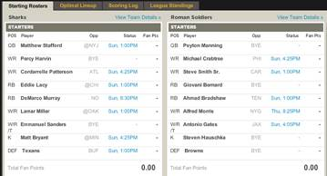

Basic Concept:
The site will have all rostered players for the 12 teams that make the playoffs. Each user will create an account with a user name, password and teamname. One user will be designated as the commissioner or admin. The commissioner creates the league and manages the league. The league consists of a group of at least 4 team managers that will compete in a head to head weekly competition. Each roster will consist of the following; One Quarter Back, Two Running Backs, Two Wide Receivers, One Tight End, One Kicker and a Team defense. Each team can pick any players but, once that players plays for a team manager they cannot play for that manager again. The goal is to have a full roster right up to the superbowl.
The scores will be based off the following scoring system. The figure below is an example of the Yahoo's Fantasy Sports stat Tracker. I will model my live scoring UI based off of that example.
| Offensive | Defensive | |
|---|---|---|
| ___ Points per receptions. | ___ Points per sack. | |
| ___ Points per receiving yards. | ___ Points per interception. | |
| ___ Points per running yards. | ___ Points per fumble recovery. | |
| ___ Points per passing yards. | ___ Points per defensive TD. | |
| ___ Points per passing TD. | ___ Points per safety. | |
| ___ points off per fumble. | ___ Points per kick return TD. | |
| ___ Points per rushing and receiving TD. | ___ Points per return yards. | |
| ___ Points per extra point made. | ||
| ___ Points per field goal made less than 20 yards. |  | |
| ___ Points per field goal made from 20 to 30 yards | ||
| ___ Points per field goal made from 23 to 40 yards | ||
| ___ Points per field goal made more than 50 yards. | ||